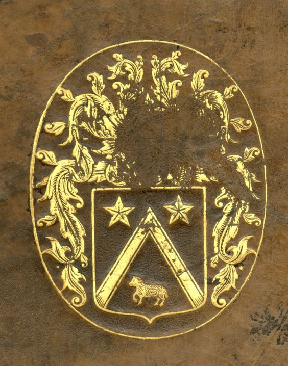

Le manuscrit a appartenu au chancelier Pierre Séguier. Puis il est entré en possession de Henri di Cambout (1665-1739), duc de Coislin et évêque de Metz Puis il est légué à l'abbaye Saint- Germain-des-Prés (1732) Et enfin il entre à la BN à la Révolution
Reliure en veau raciné, avec une estampé aux armes de Séguier: d'azur au chevron d'or, accompagné en chef de deux étoiles de même, et en pointe d'un mouton d'argent passant. Dos à 6 nerfs en veau. Dans la deuxième case en partant du haut, l'inscription à peine visible "Lancelot du Lac". Dans la dernière case du bas, l'inscription "fr. 16999". Dans les autres cases, des lettres dorées "M" ont été estampées. Contreplats avec collé dessus un papier où il est écrit: fr. 16999, suivi d'une pastille bleue.
